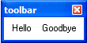
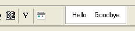

{DOCKABLE}
Syntax
{DOCKABLE= Direction }
|
Argument |
Type |
Description |
|
Direction |
C |
The side of the toolbar that can be docked. The toolbar is initially docked on the specified side. Allowable values are:
|
Description
The {DOCKABLE} command is used in an Xdialog to turn the modeless xdialog into a dockable toolbar. It can only be used if the xdialog is modeless. i.e. if you use the UI_MODELESS_DLG_BOX()command.
Supported By
Alpha Five Version 5 and Above
Limitations
Desktop applications only
Example
|
ui_modeless_dlg_box("toolbar",<<%dlg% {background=White} {dockable=float} <%B=T%Hello> <%B=T%Goodbye!close> %dlg%,<<%Code% if a_dlg_button = "close" then ui_modeless_dlg_close("toolbar") end if %code%) |
 
See Also